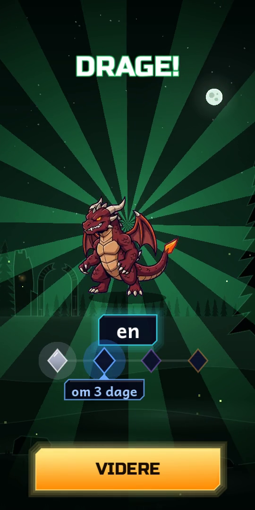
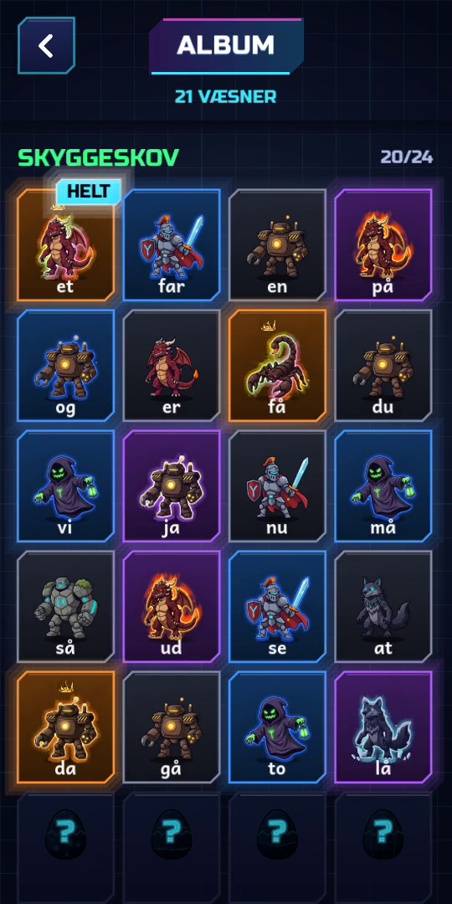

Butikssiden til Play
Tryk på en tekst for at markere den hele, og kopiér. Hold fingeren på et billede for at gemme det.
Appnavn
Level Up
Kort beskrivelse
Hør ordet, stav det og klæk væsner. De 120 mest brugte ord. Uden reklamer.
Fuld beskrivelse
Level Up er et læringsspil, hvor dit barn øver de 120 mest almindelige danske ord, de ord, der fylder omkring halvdelen af en børnebog. Sådan spilles det Barnet hører et ord og staver det med bogstavklodser, som skolen gør det: hør ordet, stav det, tjek det. Hvert ord er et æg. Når et ord sidder, dag efter dag, klækker ægget et væsen, og væsnet bærer ordet som navn. Ord, der driller, kommer igen, til de sidder, og et væsen bliver sjældnere, jo længere ordet bliver husket. Ordene følger arkets fem rækker, fra de letteste til de sværeste, og hver række er en verden med sin egen vogter. Hver dag er kort: et par runder på få minutter. Ingen straf for fejl En fejl betyder bare, at ordet bliver vist, læst op og stavet igen. Belønningen kommer for at kunne et ord, ikke for at bruge tid i spillet. For forældre • Ingen reklamer og ingen køb i appen. • Ingen konto eller login. • Intet sendes fra telefonen: fremskridtet bliver på enheden. En sikkerhedskode kan flytte det til en ny telefon. • Et forældreområde viser, hvilke ord der sidder, og hvilke der driller. Level Up er udviklet af en far til sit eget barn og deles i en lukket test.
Appikon (512 × 512)
Featurebillede (1024 × 500)
Skærmbilleder til telefon

